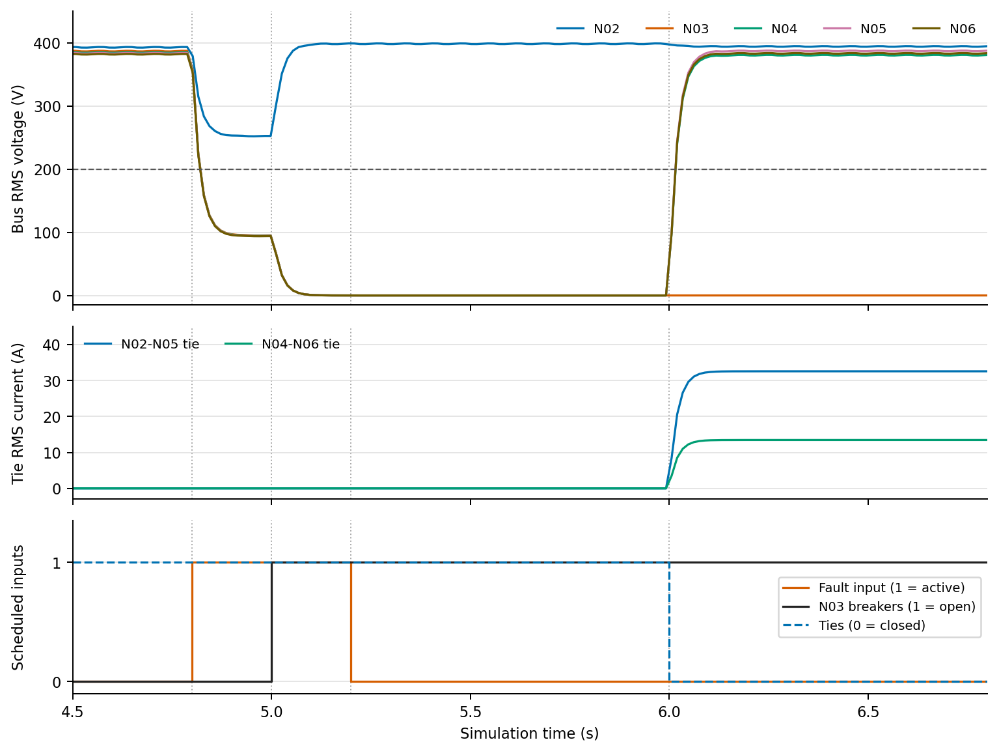
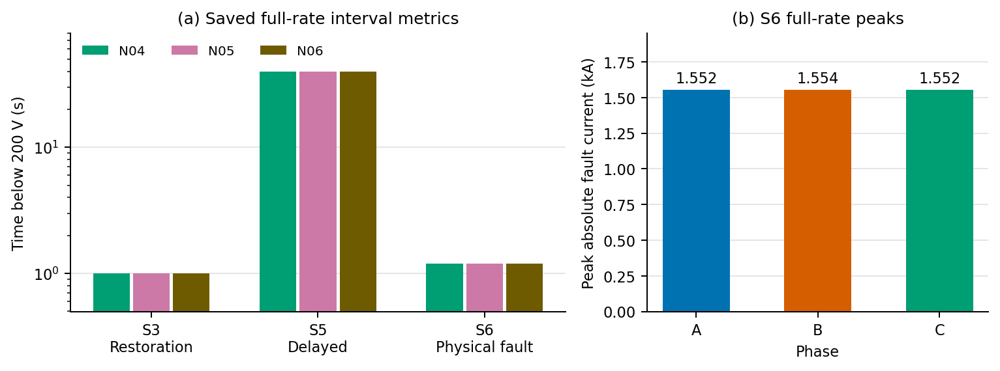

PSCAD result: fault, isolation, restoration
S6 physical ABC-to-ground fault at N03 | 400 V six-bus LV feeder

PSCAD measurements across restoration cases
Saved full-rate results | One deterministic run per case

InterpretationThe imposed command delay dominates S5's interruption. S6 demonstrates electrical fault current and downstream voltage recovery in the PSCAD model.